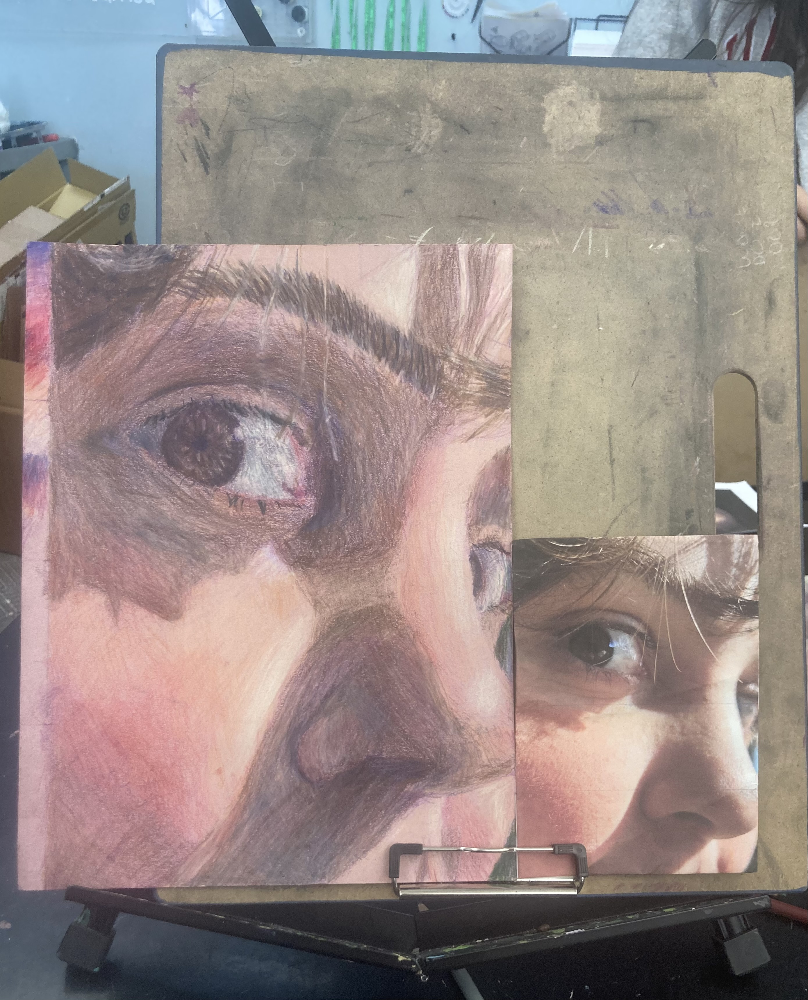
The assignment was a self-portrait drawn in colored pencil on tinted paper, working from a reference photo. My friend took the reference photo with their better phone as an extreme close-up, looking up into natural light. One of the most difficult aspects of the photo was its harsh shadows, meaning I had to incorporate both soft shading of skin and hard, dividing shadows.
The process started with a light grid on both the portrait and the reference to get placement correct. Then purple underlay for all the shadows, then red was added into the deeper shadows for warmth and my rosy cheeks, then peach and brown skin tones were layered over top, along with some green and light tan to balance the color and add highlights.
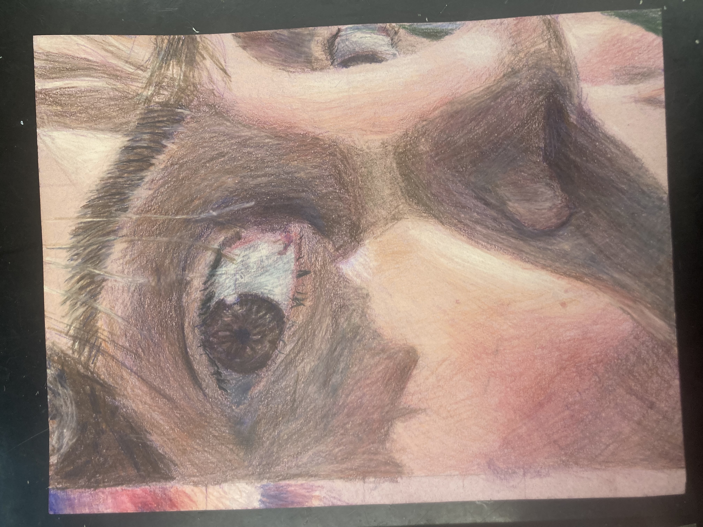
the finished portrait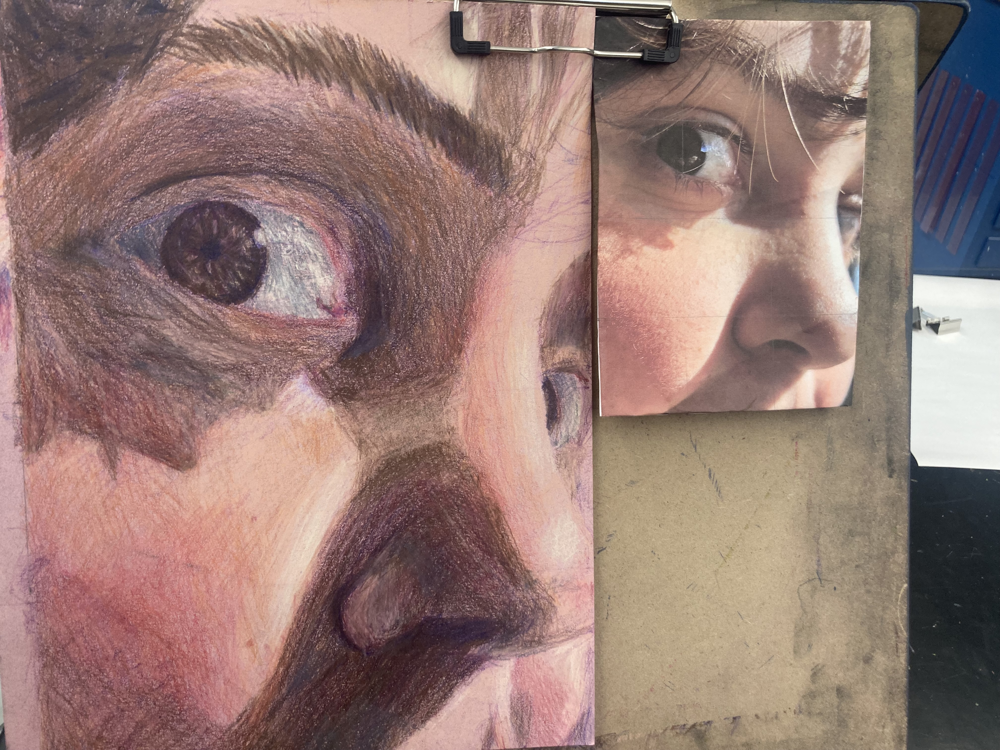
eye detail alongside the reference photoFour stages of color being added, left to right.
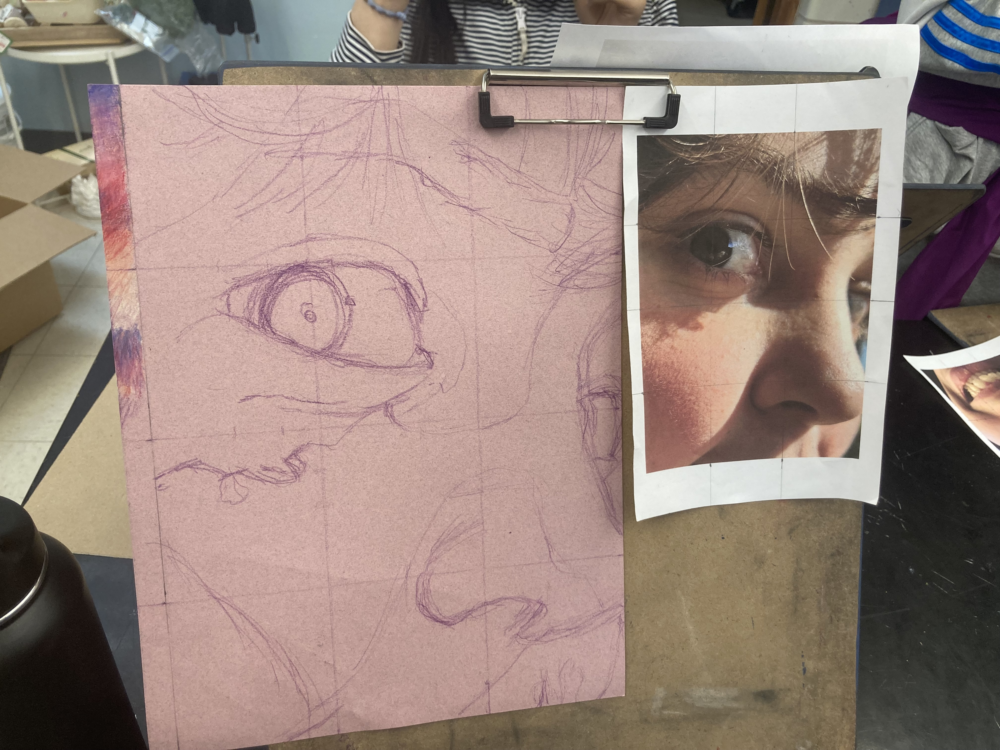
01 — outline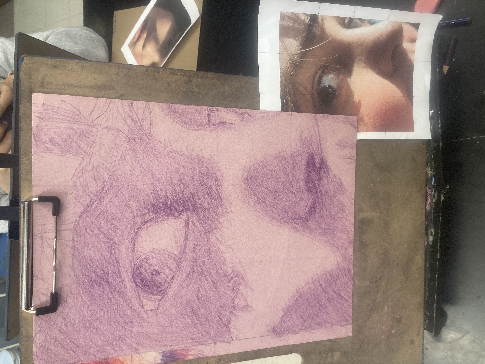
02 — purple shadows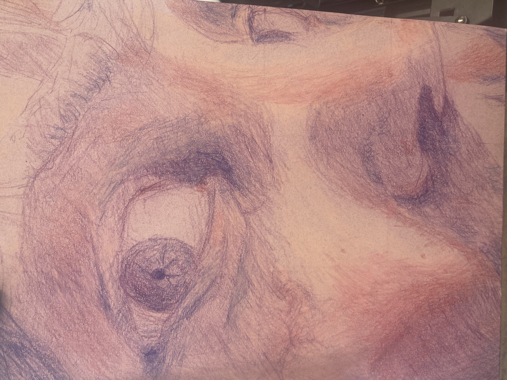
03 — red added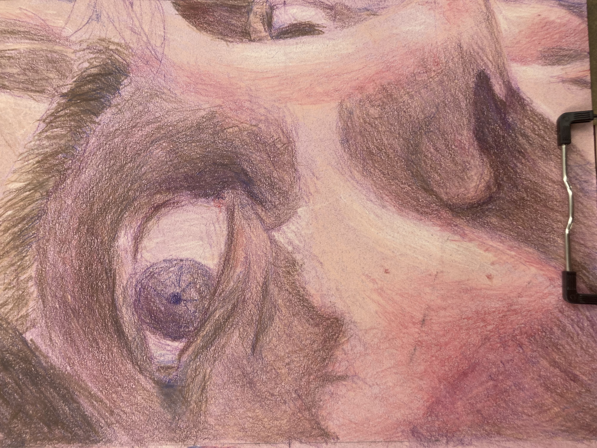
04 — peach + brownBefore starting the portrait, I practiced loomis heads, the iris, nose, and lips separately in graphite to understand how to shade them.
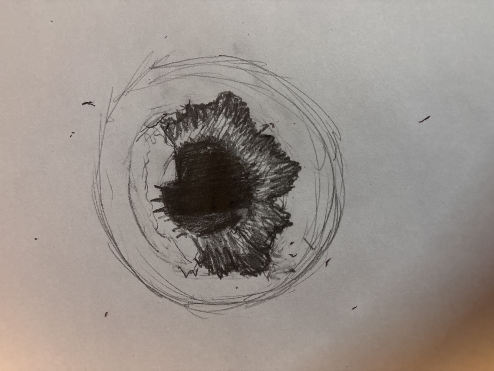
iris practice — graphite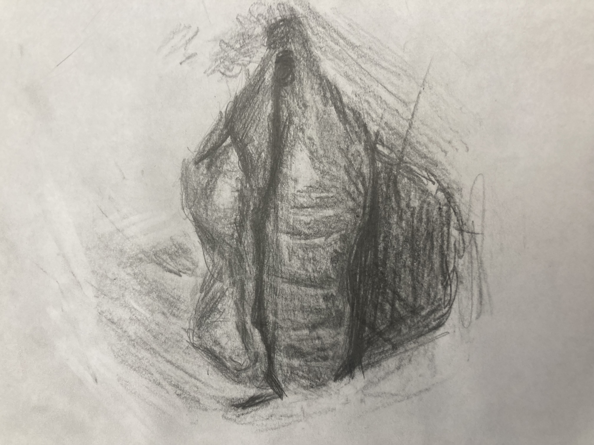
lips practice — graphiteA separate piece from the same class that I used as practice for the final portrait: a portrait depicting fear using an impressionist approach — loose, layered strokes in purple, blue, and red on gray paper, with less concern for accuracy and more for emotional expression.
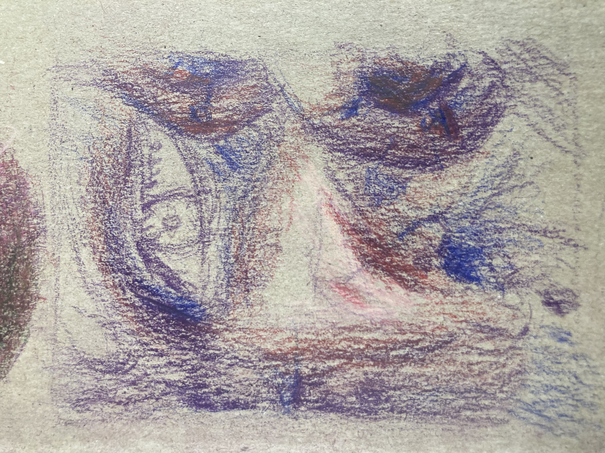
in progress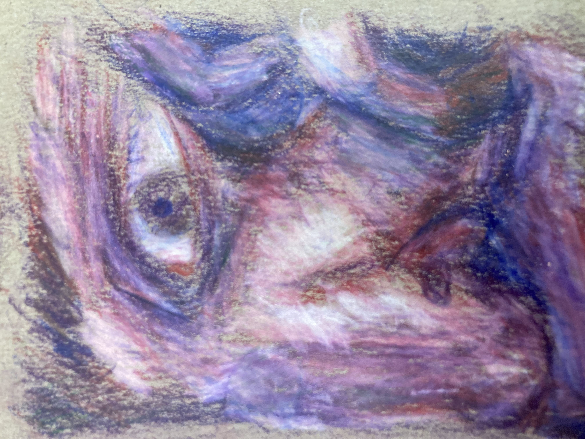
finishedThe tinted paper acts as the mid-tone, so every dark mark shadows and every light mark highlights.